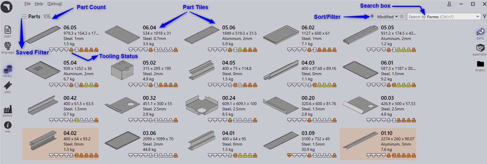

Use Shortcut key P to navigate to the Part Library

● This view displays parts as tiles with each tile displaying part-picture with a few basic part properties like name, size, material, thickness etc.
● The tile also displays tooling status of the part for the available factory machines.
● The view refreshes automatically with the live data, however you can also force a refresh by pressing F5.
● Parts can be searched by Part-Name and Material via Search box. To search parts, click inside the search-box (or use shortcut key: Ctrl + F) and type-in the text. Praxis updates the list with parts with name of material matching the search-text. Pressing Escape key, while search-box has the keyboard focus, resets the search text.
● If the list contains more item than what can fit on the page, use mouse-wheel to scroll down the content.
● Double clicking a tile or pressing Enter key after selecting a tile changes the view into the details